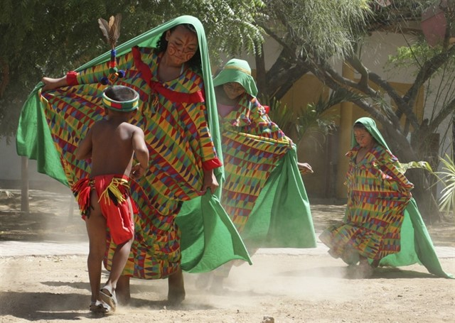
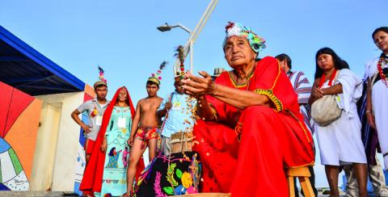
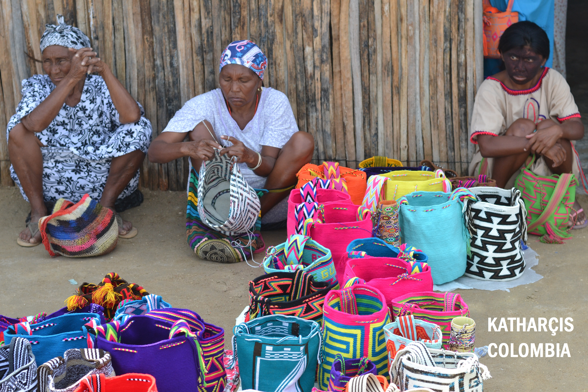
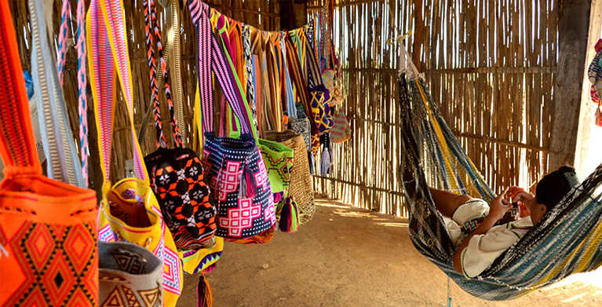

Wayú
Los wayús o guajiros , son aborígenes de la península de guaraní, sobre el mar caribe, que habitan en territorios de Colombia.
Ocupan un territorio de 15 300 km2 dentro del departamento de la Guajira, Colombia, y 12 000 km2 dentro del estado Zulia, Venezuela. El clima de la sabana xerófila al sur y occidente (Baja Guajira) y de estepa árida o semiárida al norte y oriente (Alta Guajira), es cálido y seco, la lluviosidad de esta región es muy reducida y sólo hay lluvias en el Juyapu, entre septiembre y diciembre. En la Alta Guajira está el denominado Macizo Guajiro conformado por las serranías Macuira, Jala'la, Chiare, Cojoro y Cocinas y el cerro Epitsú, que alcanzan hasta 900 msnm. Al sur de la baja Guajira corren, hacia el occidente el río Ranchería y el río Limón hacia el oriente.
Los wayuus habitan la árida península de la Guajira al norte de Colombia y noroeste de Venezuela, sobre el mar Caribe. Es una región con un clima cálido, seco e inhóspito, bañada por los ríos Ranchería (Colombia) y El Limón (Venezuela). Presenta unas estaciones climáticas marcadas por una primera temporada de lluvias, denominada Juyapu, que se desarrolla durante los meses de septiembre a diciembre, seguida de una época de sequía, conocida como Jemial, que va desde diciembre hasta abril. Posteriormente, viene la segunda temporada de lluvias, llamada Iwa, para terminar con una larga temporada de sequía que va desde mayo a septiembre.
Los wayuus son el pueblo indígena más numeroso de Colombia; cerca del 45% de la población del departamento de La Guajira. El 97 % de la población habla su idioma tradicional que es el wayuunaiki, el 32 % habla el castellano. Un 66 % no ha recibido ningún tipo de educación formal. La población wayú en Colombia, según el censo de 2005, es de 270 413 personas, las cuales representan el 20 % de la población indígena del país, siendo el grupo más numeroso en Colombia.
Lengua
Los Wayúu son en su mayoría bilingües, aunque una fracción de ellos en la Media y Alta Guajira es monolingüe. Su idioma autóctono, de la familia lingüística Arawak, cuenta con dos formas dialectales que no impiden la comunicación entre quienes las hablan: el wayuunaiki "arribero" (o de la Alta Guajira), y el "abajero" (o de la Baja Guajira).
En cuanto al estado de la lengua nativa, un 85,25% de hablantes (230.514 personas) sobre el total poblacional evidencian un alto grado de pervivencia. Los mujeres representan la mayoría en este indicador con el 51,14% (117.894 personas).
Historia
Sobre la historia del pueblo Wayúu las fuentes información- de las que se disponeanteriores a la Colonia, son poco más que las crónicas españolas, las cuales relatan que tenían una estructura organizativa basada en clanes, con altos grados de movilidad poblacional, y con una práctica extendida de caza y pesca. Todas estas características que se mantienen en diferentes grados en la actualidad. Cuando se dio el contacto con la cultura española, el pueblo Wayuú adoptó el pastoreo y aumentó el tiempo de estadía en sus lugares de residencia. Paulatinamente el comercio se convirtió en un factor importante para la obtención de bienes y adicionalmente se convirtió en un mecanismo de relación con las culturas inmigrantes. Las luchas por el control territorial fueron un factor característico del contacto con los europeos y generó rupturas sociales al interior del pueblo. Posterior al establecimiento de la república, misiones católicas hicieron presencia en el territorio, sin embargo, la cultura Wayuú se mantuvo fuerte a través de los años. Su historia reciente está caracterizada por la explotación petrolera, la apertura de la mina de carbón en el Cerrejón y el puerto marítimo de la alta Guajira, que se dio en la década de los 80. La explotación de recursos naturales ha significado problemáticas para el pueblo Wayuú, a causa de la dependencia laboral que generan. La lucha por el control territorial entre actores armados al margen de la ley ha sido también una constante de su historia reciente.
Cultura

Dentro de su cosmovisión, los Wayúu señalan que los primeros Wayúu y sus clanes surgieron todos de Wotkasainru, una tierra en la Alta Guajira. Fue Maleiwa, figura central de su universo mítico, quien los fabricó y quien hizo también los hierros para marcar cada clan y distinguirlos: uno para los Uliana, otro para los Jayaliyu, los Uraliyú, los Ipuana, los Jusayú, los Epieyú, los Sapuana, Jinnú, entre otros. Además de Maleiwa, Dios creador de los Wayúu y fundador de la sociedad, los esposos Pulowi y Juvá se relacionan con la generación de la vida. Pulowi, la mujer, se relaciona con la sequía y los vientos. Juvá, es un hombre errante que caza y mata. Wanülü representa el mal de la enfermedad o la muerte Dos momentos centrales en la vida de los Wayúu son el matrimonio y el entierro. El matrimonio es crucial por el prestigio que otorga tener la capacidad de realizar una alianza que supone tener disponibilidad de recursos y el apoyo de los suyos (el pago a la familia de la novia representado en animales, joyas, hamacas y vasijas.). El entierro está a cargo de las mujeres, quienes preparan al muerto: lo recogen, lo bañan y lo colocan en el ataúd para luego ser exhumado dos años después para incineración.
Org. Social

La organización social del pueblo Wayuú está asociada fuertemente a sus principios cosmogónicos y modos de representación mítica. Los sueños son un aspecto muy importante para el quehacer cotidiano del pueblo, puesto que explican la realidad del colectivo y de los individuos y se le confieren, además, poderes proféticos. La sociedad wayuú presenta una estructura compleja, es de carácter matrilineal y tiene unos 30 clanes, cada uno con su propio territorio y su propio animal totémico. Dentro de la familia extendida, la autoridad máxima le corresponde al tío materno, quien interviene en todos los problemas familiares y domésticos. Dentro de la familia nuclear, los hijos son dirigidos prácticamente por el hermano de la madre y no por el propio padre biológico. La mujer wayuú es activa e independiente, tiene un papel importante como conductora y organizadora del clan, y políticamente activas en su sociedad, por lo que las autoridades femeninas son las que representan a su pueblo en los espacios públicos. El matrimonio se contrae con una persona de otro clan, y los padres del hombre pagan una dote a los padres de la mujer. Los wayuú practican ocasionalmente la poligamia, que brinda prestigio al hombre que la práctica.
Los wayúu son notables por su trabajo textil. El tejido para el pueblo wuayúu es más que una práctica cultural y herencia de sus ancestros, es una forma de concebir y expresar la vida tal como la sienten y la desean. Un arte pensado y gozado. La observación de sus innumerables tejidos les permite leer el espíritu que guía su acción y pensamiento.
Kanas es la máxima expresión del tejido wuayúu, es un arte muy antiguo, probablemente originado en la alta Guajira. Consiste en un tejido de figuras geométricas estilizadas, representando elementos del medio natural que rodean la vida cotidiana del wuayúu.
Entre más complejas las figuras, mayor valor adquiere la pieza. Se teje en telar de horqueta. Cada kanas tiene un nombre y significado.
El chinchorro y la hamaca son los tejidos más representativos de la cultura Wuayúu. Aunque el chinchorro y la hamaca tienen una misma función, a nivel de textiles tienen diferencias marcadas; el primero es elástico y de tejido suelto y el segundo es pesado y compacto, de un tejido paleteado.
Las hamacas y chinchorros se elaboran manualmente; una vez terminado el cuerpo central, la cabuyera, el asa o agarradera, y el fleco se tejen por separado. La cabuyera va atada a la cabecera y el fleco es una franja larga y angosta que cuelga de los orillos laterales del cuerpo del chinchorro. El Shei es una manta funeraria en la que envuelven y entierran a los difuntos; es rectangular y de gran colorido, rica en dibujos de kanas. Liíra es la faja larga y angosta que hace parte del guayuco masculino. Mantalaju es la faja que va sobre el pellón y se ata a la silla de montar y a la cincha. Atula es una compleja técnica de trenzado de hilos, que demanda mucha destreza y concentración. La mochila, susu o ‘lo que camina con uno’, nunca falta en la indumentaria wayúu; se teje en crochet o ganchillo, con la fibra del maguey y el algodón.
Existen varias clases de mochila: Susuchon, que lleva el nombre colgado de la faja, una a cada lado del guayuco; Susu, la mochila de diario, de tamaño mediano, que el wayúu lleva a todos lados; Ainacajatu, una mochila grande donde la mujer lleva el chinchorro, ropa y lo necesario para los viajes; Kapatera, la mochila grande del hombre, una especie de tubo cilíndrico, con dos bocas y cordones de cierre que se utilizan también de colgaderas. Kattowi, una mochila de malla muy resistente y de múltiples usos, para transportar ollas y múcuras llenas de agua. Los hombres wayúu elaboran sombreros de hoja de palma, apropiados para las jornadas de intenso sol, mantas y guaireñas o alpargatas (el calzado hecho para resistir ingentes jornadas en la arena), entre otros.
El tejido para el pueblo wuayúu es más que una práctica cultural y herencia de sus ancestros, es una forma de concebir y expresar la vida tal como la sienten y la desean. Un arte pensado y gozado. La observación de sus innumerables tejidos les permite leer el espíritu que guía su acción y pensamiento.
Economía

La pesca artesanal y el pastoreo constituyen dos sectores tradicionales de la economía. Dadas las condiciones de sus tierras, los wayúu desarrollan una economía mixta, basada en la cría y pastoreo de ganado caprino y vacuno (caballar) combinada con una horticultura especializada de maíz, fríjol, yuca, auyama, pepinos, melones y patilla, además de actividades como la caza. Además de ser parte de la base alimenticia y objeto de intercambio, el ganado - especialmente los chivos - tiene un significado cultural que lo erige en símbolo de poder, estatus y prestigio. Las familias indígenas ubicadas en la costa occidental y que dependen mayoritariamente de la pesca, conservan celosamente sus derechos a ésta. Cada huerta es propiedad de un hombre y éste asigna a sus hijos el derecho a utilizar secciones del terreno. Cada hombre cultiva su parcela asistido por su mujer. La explotación de sal en Manaure también es otra fuente de subsistencia, la cual se hace de manera mecanizada o artesanal; en esta última, participa principalmente un indígena utilizando "charcas", de las que saca dos cosechas anuales.
La ropa tradicional es llamativa y distintiva. Las mujeres usan vestidos largos, fluidos y floridos hasta los tobillos. Se ajustan holgadamente y, por lo tanto, son frescos en el clima cálido. También protegen la piel del sol.
Los hombres son a menudo altos y delgados, con extremidades fuertes. Sus taparrabos tradicionales a veces están decorados con brillantes borlas y pompones. También usan pompones en sus sandalias como un signo que puede indicar su rango como príncipe.
Cuando van a la ciudad, usan camisas y pantalones de algodón simples, como lo hacen otros habitantes de la ciudad en los climas cálidos de América del Sur.
El maíz y los productos elaborados con harina de maíz son parte de la dieta básica. La proteína se obtiene del pescado capturado en las aguas costeras de la península. Las tortugas a veces proporcionan una fuente de proteína y se consideran un manjar.

Aunque los wayuu se convirtieron gradualmente católicos, algunas creencias y prácticas de tiempos anteriores persisten. Cada clan tiene un símbolo, generalmente extraído del mundo animal. Representa ciertas virtudes y rasgos con los que el clan se identifica.
Este símbolo generalmente es entendido por los forasteros como un tótem. Esto significa que el poder, las esperanzas y las virtudes que el clan considera valiosas se expresan mediante la elección del símbolo. A veces, este símbolo está tatuado en el brazo de una persona.
La vida religiosa para los Wayuu es una mezcla de catolicismo y creencias tradicionales. Estos incluyen una visión diferente de la vida futura. El cabo en la cabeza de la península de Guajira, llamado el Cabo de la Vela (el Cabo de la Vela), se llama Jepira por los Wayuu. Lo consideran un lugar sagrado porque creen que los wayuus que han fallecido aún deambulan por allí.
La sociedad wayuu tiene una estructura compleja, de naturaleza matrilineal y clínica, y tiene alrededor de 30 clanes. Cada uno con su propio territorio y su propio animal tótem. Todavía hay autoridades tradicionales, y hay una forma específica de administrar justicia, las figuras del putchipu que son portadores de la palabra y también para ayudar a resolver los conflictos entre los clanes.
En vista de que entre los wayuu no hay existencia de una jerarquía que los organice de forma social, hay muchas dudas de como se resuelven sus conflictos internos. Por lo cual, desde el momento exacto en el que nacen forman parte de un clan, en el que tienen que seguir normas y reglas del mismo, entonces el grupo se encarga legalmente de todos los miembros pertenecientes, de esa forma se estructuran para su funcionamiento adecuado como comunidad.
En esta sociedad, los hombres adultos se vuelven lideres o jefes de su clan, claramente son hombres mayores a los cuales se refieren como ‘’mi viejo’’, que se encargan principalmente de los asuntos sociales de la población y de los problemas o conflictos que puedan existir. Además, se encargan de proteger a la familia de los peligros externos que pueden existir.
Antes de continuar, y para comprender mejor la situación de La Guajira y a los Wayúu, hay que saber que en Colombia existen 102 pueblos indígenas, de los cuales 18 están en riesgo de extinción. Para evitar esto y en pro de preservar su sistema normativo, su lengua y su historia, se aprobó la Ley número 70 de 1993, en la que se dice que el Gobierno colombiano debe «garantizar la protección de los territorios ancestrales, invertir en su desarrollo económico y proteger su identidad cultural y derechos civiles».
En uno de sus puntos establece que son los indígenas los que han de administrar su propia justicia, gracias a un sistema legal basado en la figura del Palabrero.
Esta autogestión, y, por consiguiente, el difícil acceso al territorio wayúu por parte del Gobierno y la Policía, ha convertido históricamente a La Guajira en la puerta de salida del narcotráfico, tanto por mar como por aire. De hecho, a mi llegada a La Guajira, me sorprendió la repentina carretera de incontables carriles y escasos kilómetros. Era una antigua pista de aterrizaje fabricada por los narcotraficantes, posteriormente reconvertida en autopista.